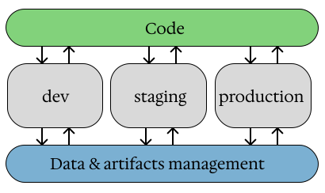

Data science#
Data science is a field that uses scientific methods, processes, algorithms and systems to extract knowledge and insights from the structured and unstructured data.
Data processing#
There are methods for preparing data for model fitting that can improve the final model’s performance.
Standartization#
Standartization: Makes the mean value of the data 0 and hte strandard deviation 1.
Sometimes confusion arises regarding the terms standardization and normalization. Normalization involves adjusting data to a fixed range.
The following benefits result from performing the standardization:
Better Interpretability of the model.
Prevention of Model Biases to the fiatures with higher scale.
Enhanced Convergence: makes the values of a loss function is more controllable.
There are methods that certainly require the standardization of the data:
Liear Models.
Support Vector Machines (SVM).
K-Nearest Neighbours (KNN).
Neural networks.
Categorical encoding#
Most of the machine learning approaches do not allow the use of categorical features. However, there are approaches that can convert them into a numerical form:
One-Hot Encoding: Create a binary variable for each category. The variable takes a value of 1 if the corresponding value appears in the original column and 0 otherwise.
Label encoding: Assigns an integer to each category.
Target encoding: Assigns a signle value to the target values that corresponds to the encoded category.
Embeddings: Assigns a special vector to each category that considers the relationships between the encoded categories.
Splitting data#
A crusial step in validating the machine learning model is splitting the data: the model is trained on the one split and validated on the other. This approach allows ensures that the model’s good performance isn’t just due to overfitting - memorizing the entire training dataset - but rather, it’s due to the identification of general rules that accurately describe the process under consideration.
In terms of data splitting, 3 subsets of data are usually created:
train: a set of data that is used training a model.
valid: a set of data on which all the different models will be estimated during the experimentation phase.
test: a set of data that is used to estimate the final model. This step is necessary to eliminate the bias associated with the process of selecting optimal hyperparameters.
Sampling is an approach for selecting samples from each group. There are a few approaches that are reasonable in most cases:
Random: Select points at random for different group.
Stratified: Each split has a proportional representation of the specified groups, as in the original dataset.
Cluster: Selects the entire group instead of individual points.
Cross-validation is an approach in which a train-test split is performed multiple times. Each time, the model is trained from scratch using each training set and evaluated using each testing set. There are few typicall approaches how to perform a cross-validation:
K-Fold: Define \(k\) different, non-overlapping test subsets. The remaining data for each test subset is considered training data.
Stratified K-Fold: In each train-test split, there is a strata that are proportional to those in the entire dataset.
Time-series: In each split, the data is separated according to the timming of the observations. Earlier data goes to the training set, and later data goes to the test set.
Classification#
Classification is a set of supervised machine learning tasks that are supposed to predict the lable to which a particular object corresponds.
Binary classification: is a task that separates samples into two groups.
Multiclass classification: separates data into more that two groups.
Multiclass#
Multiclass classification is a group of machine learning approaches that enables the separation of data into \(n\) groups.
There are two groups of the machine learning algorithms for multiclass classification:
One-vs-Rest trains a binary classification model to distinguish samples that belonging to a particular class from the all others: \(f^i(x)=P(y=i|x), i = \overline{1,n}\).
Multinomial builds a transformation of the input data to produce a vector containing a score that describes the likelihood of each class to correspond to the given \(x\): \(f(x) = \left[P(y=1|x), P(y=2|x), \ldots, P(y=n|x)\right]\).
Hyperparameter tuning#
Hyperparameter is a parameter whose values is used to control the training process.
Hyperparameter tuning is the process of adjusting the hyperparameters of a model to find the best configuration that maximizes its performance on a given dataset.
There are three typical approaches to perform a hyperparameter search:
Grid Search: For each hyperparameter, a set of possible values is defined, and the algorithm tries all possible combinations.
Random Serach: Random selection of the combinations of hyperparameters.
Bayesian Optimization: A set of approaches that introduces a probability model of the objective function. These approaches guide the search based on previous evaluations.
DL mechanisms#
Deep Learning is an advanced form of machine learning. It implements the concept of the human brain in the mathematical terms. A set of signals (actions) that appears when a specific input is received. In mathematics, this is usually implemented as a deep composition of functions - that’s actually the term term “deep learning” come from.
The DL is typically used in computer vision and complex NLP tasks. There are other sections for applications. This section considers general deep learning approaches.
Check details in the DL meachanisms
Computer Vision#
Computer vision tasks are commonly divided into categories. It is important to understand the differences in order to select the correct approach.
Classfication: is a form of computer vision in which a model is trained on a set of labaled images. The goal of the model is to predict the label to which an image belongs to.
Object Detection: Identifying the location of specific object in an image. In the most typcal case, simply to build a box around the object in the image.
Semantic segmentation: Identifying to each pixel a class that determines the object pixel belongs to.
Generating pictures.
NLP#
Natural Language Processing (NLP) a set of tasks related to processing texts.
This field considers approaches related to:
Texts classification. It defines which class a given text belongs to from a given set of classes.
Sentiment analysis: Identifying the tone of the text. For example, it can be positive, negative or neutral. Note: Some sources treat this as a separate task.
Named Entity Recognition (NER): This task involves identifying specific componets (named entities) within texts that contain particular pieces of information.
Texts generation.
For more details, check the NLP page.
Vector search#
Vector search is an information retrieval approach that transforms data into vectors representing original objects in a compact numerical form. The process of transforming raw data into vectors is called emdeddings. The embedding process is designed so that similar objects (according to a chosen notion of similarity) are located close to each other in the resulting vector space. As a result, vector search allows finding similar objects based on properties that are difficult to describe with strict, rule-based methods.
There are different types of vector embeddings, depending on the type of data to which they are applied:
Word embeddigns: Typically used for capturing semantic relationship between words (such as antonyms and synonums), and contextual usage in tasks like language languate translation and modeling, word similarity, synonyms generation, and sentiment analysis.
Sentence/documents embeddings: Captures the general sence of entire text.
Graph embeddings.
Image embeddings: Used for content based recommendations, imange and object recognition, and image search systems.
Audio embeddings: Represent a different features of audio signals, such as the rhythm, tone, and pitch. They are used for emotion detection, voice recognition, and recomendation systems.
MLOps#
MLOps is a set of practices, processes and technologies for managing data, code, and models to improve performance stability and long-term efficiency in ML systems.
Components#
The components of MLOps:
DataOps: improve processes around data to increase speed, governance, quality, and collaboration.
Optimized data processing and monitoring.
Centralized data discovery, management, and governance.
Ensured data quality.
Traceable data lineage and monitoring.
DevOps: integrate and automate software development workflows.
Continuous integration and continuous deployment (CI/CD).
Version control via
git.Production wrokflows: orchestration and automatization.
ModelOps: organize and govern the lifecycle of machine learning and artificial intelligence models.
Work with models as with objects.
Managing model lifecycle.
Principles#
A set of common principles applied to building an MLOps infrastructure:
Setting multiple environments:
Development: An environment where data scientists can explore, experiment, and develop.
Staging: An environment where machine learning practicioners can test and monitor their solutions.
Production: An environment where machine learning engineers can deploy and monitor their solutions.
Deployment patterns, different approaches on deployment:
Deploy model: train the model only in a development environment and then deploy it to other environments. This approach is good when the training the model is costly.
Deploy code: code for model training is tested in the staging environment, and to production is pushed a whole training pipeline.
Deployed solution have to follow:
Intentionality: Ensuring that the models are designed and behave in ways aligned with their purpose.
Accountability: The team have overall view of which models are using what data. Ensuring that data is collected in accordance with regulations.
Practices#
The MLOps is a set of practices that simplifies the machine learnig model lifecycle. There are following practices:
Automation and CI/CD/CT:
CI: continious intergration.
CD: continious deployment.
CT: continious training.
ML pipeline orchestratoin.
Data and Model management:
Version control for: code, data and model.
Experiments tracking.
Data validation and quality checks.
Keeping feature store: a special data space where prepared features are stored, so that they can be used both in traning and inference phases.
Model quality and realiability.
Rigourous testing:
Unit and integration testion for code.
Data validation tests.
Model validation tests.
Model quality, fairness, and interpretability tests.
Reproducibility: ensuring that the same code, data, and invironment will always produce the same model results.
Operations and governance:
Deployment approaches: to prevent mlservice to be unawailable there are canary ans shadow deployment techniques.
Continuos monitoring of the following things: Model Performance, Data Drift, Concept Drift.
Collaboration: fostering tight collaboration between data scientiests, ML engineers, and operation teams.
Achitecture#
Your MLOps Architecture have to complete following goals:
Simplicity: The downstream management, maintenance, and monitoring of the project is simplified.
Efficiency: Processes arond the project become more efficient.
Scalability: The ML solutions can be scaled to adapt to changing requirements for infrastructure and compute.
Collaboration: It’s easy for different users and different types of users to collaborate.
Infrastructure the organiation, governance, and setup of environment, data, compute and other resources:
Set up one time (per project or per team/organization)
Crucial to downstream success of project.
Workflow is the processes that ML practitioners follow within a defined architecture to achieve success on an ML project.
Repeatable, fluid processes specific to a project.
Aligned to organizational best practices.
Organiztion of MLOps infrastructure:

Model deployment#
There are a few methods for machine learning model deployment. The following table lists and describes them:
Deployment Method |
Throughput |
Latency |
Example Application |
|---|---|---|---|
Batch |
High |
High (hours to days) |
Periodic customer churn prediction |
Streaming |
Moderate |
Moderate (seconds to minutes) |
Dynamic pricing application |
Real-time |
Low |
Low (milliseconds) |
Recommendation systems & Chatbot |
Edge/Embedded |
Low |
Low (Dependent on device processing power) |
IoT Applications. Farm sensor for detecting humidity |